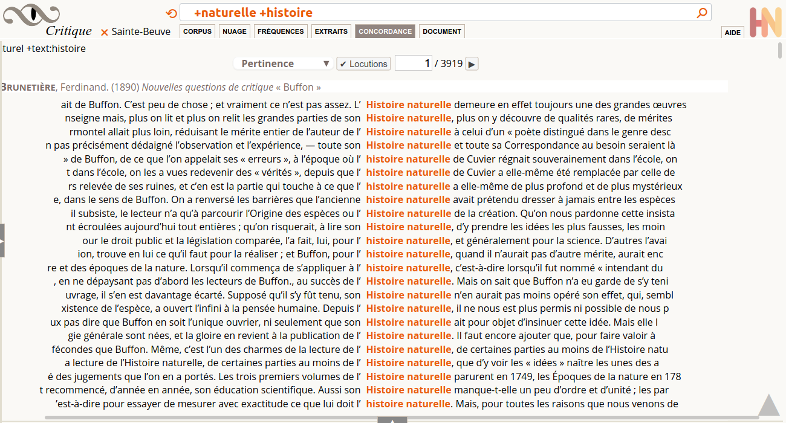
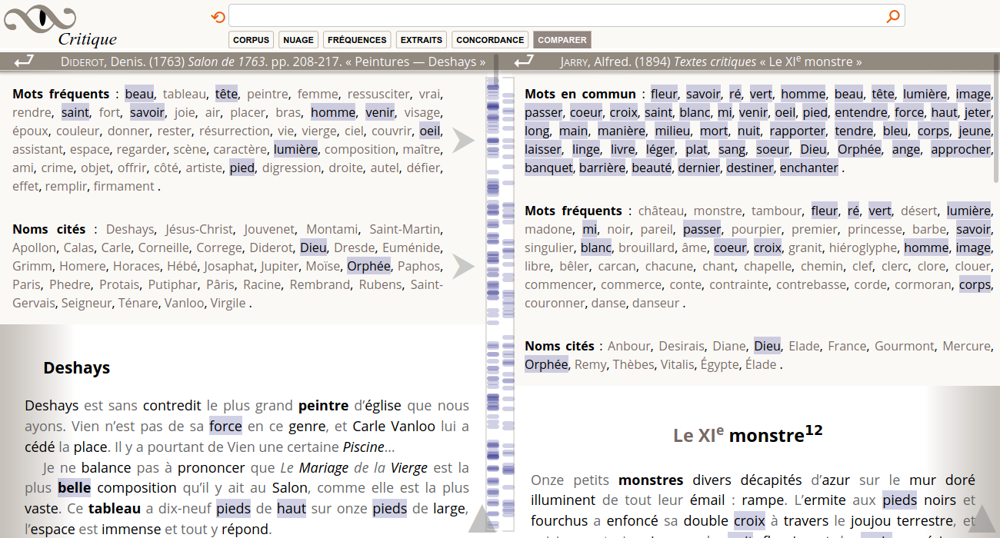

Présentation
Obvie est un logiciel en ligne pour explorer des textes. Il permet de retrouver des passages, comme dans un moteur de recherche conventionnel, selon différentes présentations paginées ; mais aussi, de calculer des statistiques globales, pour toute la collection, ou une sélection personnalisée. Il en résulte un bureau redimensionnable qui compose plusieurs vues, le plus possible intuitives et reliées. La lecture de cette documentation n’est pas requise pour découvrir la plupart des fonctionnalités. Elles sont expliquées ici pour assurer l’utilisateur qu’il a tout découvert par lui-même. Le texte est ordonné comme un scénario conventionnel d’exploration, expliquant chaque vue.
- Recherche
- Statistiques globales
- Résultats paginés
Recherche
Le champ de recherche est toujours visible, dans toutes les vues, il affecte la plupart des vues. Quand aucun mot n’est cherché, les vues se rapportent à la totalité de la collection ou à la sélection personnalisée en cours, sinon, elles se rapportent aux mots recherchés. Pour chaque vue seront précisés les comportements avec ou sans mots recherchés.
Lemmatisation — Les textes sont indexés par les lemmes, c’est-à-dire que l’on trouve toutes les formes d’un verbe conjugué en cherchant son infinitif, de même, les noms et les adjectifs sont ramenés à une forme canonique au masculin singulier. Les noms propres doivent être cherchés avec une majuscule initiale. Les accents sont significatifs.
Pertinence – Outre le tri par auteur ou dates, un moteur de recherche permet de proposer les résultats en ordre de pertinence selon les mots recherchés. Après une expérimentation systématique, Obvie a choisi l’algorithme BM25 qui est apparu le plus robuste. Il est utilisé à tous les endroits où l’on parlera de pertinence. Le principe consiste à pondérer le nombre de d’occurrences trouvées dans des textes, la taille de ces textes, et le nombre de documents trouvés. Cet ordre est souvent plus précis que le nombre brut d’occurrences qui favorise les documents les plus longs.
Opérateurs — Rechercher plusieurs mots revient à un ou implicite. Deux opérateurs fonctionnent et peuvent se combiner :
- + (et). +amour +gloire +beauté, trouve tous les textes qui contiennent à la fois les mots amour, gloire, et beauté.
- - (non). intuition -pur, trouve tous les documents avec le mot intuition mais sans l’adjectif pur.

La lemmatisation dans Obvie est réalisée automatiquement par le logiciel Alix, selon un algorithme imparfait mais aux erreurs prévisibles. Toute graphie rencontrée est ramenée au lemme le plus fréquent dans un dictionnaire. Par exemple, la graphie suis est toujours ramenée au verbe être, sans essayer de résoudre les équivoques (ex : je suis son ombre, être ou suivre ?). Des progrès sont attendus prochainement sur la prise en compte de graphies d’Ancien-Régime, et les locutions (parce que, Conseil d’État…).
Corpus
La vue corpus se présente principalement comme un tableau bibliographique de livres. Dans Obvie, un livre est un groupe de chapitres, le chapitre est l’unité documentaire de référence qui est trouvée et comptée (docs). Cliquer une cellule en tête de colonne permet de trier les lignes selon les valeurs dans cette colonne (mots ou nombres). C’est l’interface la plus complexe, elle a trois usages :
- Liste de tous les livres de la collection proposée (quand aucune sélection ou recherche est en cours).
- Avec une recherche active, statistiques par livre.
- Composition et enregistrement d’une sélection personnalisée de livres pour limiter les recherches et les statistiques. Mode d’emploi :
- Cliquer la case à cocher d’une ligne pour sélectionner ou déselectionner un livre.
- Nommer la sélection dans le champ texte.
- Ne pas oublier d’enregistrer pour transmettre la liste au serveur.
Ces différents usages conditionnent l’affichage de certaines sections ou colonnes.

Colonnes
- , — Sur une ligne, cliquer une case à cocher sélectionne ou déselectionne un livre dans une sélection personnalisée. En tête de colonne, cliquer la case à cocher sélectionne ou déselectionne toutes les lignes visibles.
- auteur — Forme normalisée du ou des auteurs, tel qu’inscrit dans le fichier indexé.
- date — Année de publication, telle qu’inscrite dans le fichier indexé.
- titre — Cliquer un titre permet d’arriver à des résultats de recherche qui commencent avec le premier chapitre trouvé de ce livre.
- taille — Nombre total de mots du livre (indice utilisé dans les calculs statistiques).
- docs — Nombre de chapitres (documents) : soit le nombre total de chapitres du livre quand aucune recherche n’est en cours, soit le nombre de chapitres contenant les mots recherchés.
- occs — Nombre d’occurrences trouvées quand une recherche de mots est en cours.
- pertinence — Score de pertinence du livre selon la recherche en cours.
- — Nom de la sélection personnalisée en cours ou à enregistrer.
- 🗙 Nom de sélection — Cliquer la croix rouge annule la sélection personnalisée en cours.
- Filtres — Cliquer la flèche pour ouvrir le bloc et accéder à des champs réactifs avec suggestion pour sélectionner des lignes dans le tableau (auteur, date, titre).
Auteurs
Le volet latéral présente une liste de facettes : les auteurs. Il fonctionne aussi comme un instrument de navigation dans la requête en cours, cliquer un auteur ouvre la page qui le concerne. Les noms sont accompagnés de chiffres, selon le contexte en cours :
- collection complète, pas de sélection ou de requête en cours — Nom, Prénom (nombre total de documents=chapitres)
- sélection personnalisée, pas de requête en cours — Nom, Prénom (nombre de chapitres dans les livres sélectionnés / nombre de chapitres total)
- requêtes en cours — nombre d’occurrences trouvées. Nom, Prénom (nombre de chapitres trouvés / nombre de chapitres total)
Tris — Ces chiffres permettent de se faire une idée de l’importance d’un auteur, dans la totalité d’un corpus, ou en fonction d’une requête. La liste peut être triée selon trois ordres : alphabétique, fréquence, pertinence.
- Alphabétique — de A à Z.
- Fréquence — du plus ou moins fréquent, ce qui a une signification différente selon le contexte ; pas de requête en cours : la taille de l’auteur (en nombre de mots, pas en nombre de chapitres) ; requête en cours : nombre d’occurrences trouvées (sans pondération relative à la taille de l’auteur).
- Pertinence — uniquement significatif quand une requête est en cours, pondération BM25 pour relever les auteurs pour lesquels les mots cherchés sont particulièrement spécifiques (cf. illustration, pour une requête sur le mot intuition, Bergson est évidemment très important, mais aussi le critique littéraire Visan, ou le scientifique Poincaré)

Chronologie
La vue chronologique montre la fréquence des termes cherchés dans les documents trouvés (soit dans toute la collection, soit dans une sélection personnalisée). S’il n’y a pas de recherche en cours, cette fenêtre est vide. La chronologie fonctionne aussi comme un instrument de navigation dans la requête en cours, cliquer une année ouvre la page qui la concerne.
Lecture – L’échelle horizontale de cette chronologie est égale en nombre de mots (longueur des textes), afin d’assurer que les fréquences soient comparables. Il en résulte qu’une même longueur ne représente pas un nombre égal d’années. Un corpus historique réel a nécessairement une densité variable (par exemple, il se publiait beaucoup moins de livres durant l’Ancien-Régime que maintenant, les guerres diminuent beaucoup la production éditoriale). Les points sur le graphique sont posés à distance horizontale presque égales (toujours à la frontière d’un chapitre, l’unité documentaire). La courbe proposée est une interpolation avec un peu de lissage, pour aider à lire les points, qui sont les seules données réelles. L’échelle verticale est ramenée à des ppm (parties par million), c’est à dire à un nombre d’occurrences par million de mots. L’échelle verticale est logarithmique, ce qui permet de comparer les pentes entre courbes, même si les mots ne sont pas dans la même couche de fréquence (un mot 10x plus fréquent entre deux sections d’un corpus est un phénomène aussi important, relativement, que ce mot soit rare ou commun).

Nuage
Un nuage de mots propose une présentation synthétique d’une liste de mots en ordre de fréquence (ce sont les mêmes données que la vue Fréquences). Quand il n’y a pas de recherche en cours, le nuage présente la liste des mots les plus fréquents du corpus en cours (collection complète ou sélection personnalisée). Quand une recherche est en cours, le nuage présente les cooccurrents les plus fréquents des mots recherchés. Par défaut, 5 mots à droite et 5 mots à gauche du pivot (mot trouvé) sont repris dans la liste de fréquence. Il est possible de modifier la taille de ces contextes gauche et droit. Ainsi par exemple pour le mot campagne avec un contexte gauche à 0, les mots plus fréquents peuvent être Italie ou Russie (campagne de …), avec un contexte droit à 0, ce seront plutôt maison ou curé (… de campagne). Un sélecteur permet de modifier le nombre de mots du nuage, et le type grammatical des mots affichés.
Lecture – Un mot plus gros est plus fréquent. Sa position sur la surface n’est pas significative. L’algorithme commence par placer les mots les plus gros au début, et au centre. Ensuite, il recherche des emplacements libres pour placer les autres mots. La rotation aléatoire des mots permet d’aérer le nuage. L’angle varie de -45° à +45°, selon 4 positions qui ne passent pas par l’horizontale, afin de ne pas privilégier certains mots par le sens de lecture. Les mots peuvent être trouvés avec la fonction de recherche native du navigateur (Ctrl+F). La couleur est significative (rouge pour les noms propres, bleu pour les substantifs, gris pour le reste). La graisse et l’opacité ne sont pas significatives, elle servent à adoucir les mots les plus gros pour laisser de l’attention aux mots plus petits.

Fréquences
La vue des fréquences présente une liste de mots avec différents chiffres sous forme d’un tableau triable sur chaque colonne, ce sont les mêmes données que le Nuage. Quand il n’y a pas de recherche en cours, le tableau présente la liste des mots les plus fréquents du corpus en cours (collection complète ou sélection personnalisée). Quand une recherche est en cours, le tableau présente les cooccurrents les plus fréquents des mots recherchés. Par défaut, 5 mots à droite et 5 mots à gauche du pivot (mot trouvé) sont repris dans la liste de fréquence. Il est possible de modifier la taille de ces contextes gauche et droit. Ainsi par exemple pour le mot campagne avec un contexte gauche à 0, les mots plus fréquents peuvent être Italie ou Russie (campagne de …), avec un contexte droit à 0, ce seront plutôt maison ou curé (… de campagne). Un sélecteur permet de modifier le type grammatical des mots affichés. Le bouton CSV permet de télécharger la totalité des données selon les paramètres en cours, pour étudier les données dans un autre logiciel de type tableur (LibreOffice Calc, Microsoft Excel…).
Extraits
Comme les vues Concordance et Document, la vue extraits propose une version paginée des résultats de la recherche en cours. Pour chaque texte, un algorithme sélectionne les phrases les plus pertinentes pour les mots recherchés. Cette présentation désormais courante dans les moteurs de recherche doit permettre de se faire une idée rapide du contenu d’un texte.
Une navigation précédent|suivant (par page de 100 documents) permet de parcourir tous les résultats de la requête en cours. Plusieurs ordre de tri sont proposés : par auteur, par date, et par pertinence. Bien que le même algorithme soit utilisé pour trier les documents (chapitres) et les auteurs, le texte le plus pertinent peut ne pas être du premier auteur, car l’ensemble de mots sur laquelle la pertinence est calculée n’est pas le même.

Concordance
Comme les vues Extraits et Document, la vue concordance propose une version paginée des résultats de la recherche en cours. Les lignes sont centrées sur la requête avec un court contexte à droite et à gauche. La coche Locutions permet de regrouper les expressions composées avec au moins deux mots de la requête, séparés de moins de trois mots. Attention, il ne s’agit pas (encore) d’une recherche d’expressions dont les statistiques seraient portées dans toutes les vues.
Une navigation précédent|suivant (par page de 100 documents) permet de parcourir tous les résultats. Plusieurs ordre de tri sont proposés : par auteur, par date, et par pertinence. Bien que le même algorithme soit utilisé pour trier les documents (chapitres) et les auteurs, le texte le plus pertinent peut ne pas être du premier auteur, car l’ensemble de mots sur laquelle la pertinence est calculée n’est pas le même.
Document
Comme les vues Extraits et Concordance, la vue document (chapitre) propose une version paginée des résultats de la recherche en cours. Il est possible de naviguer dans les occurrences trouvées en cliquant des repères sur une réglette, ou par les flèches précédent|suivant qui les encadrent. Le document est présenté avec une typographie riche, distingant par exemple les notes ou les citations en vers, selon la source XML/TEI. La vue document permet d’accéder à l’interface Comparer
Une navigation précédent|suivant permet de parcourir tous les résultats de la requête en cours.

Comparer
L'interface comparer permet de trouver des textes similaires à un texte de référence. On y accède par la vue document.
L'entête du texte de référence comporte différentes listes de mots significatifs (en ordre de fréquence). Cliquer la flèche ⮞ lance une recherche avec ces mots. Les textes trouvés sont les plus pertinents pour ces mots (algorithme BM25). La liste de documents commence en général par le document de référence, ce qui assure bien de la pertinence.
Une fois un texte choisi dans la fenêtre de droite, une entête propose différentes listes de mots significatifs, notamment les Mots en commun entre les deux textes.
Cliquer une catégorie comme Mots en commun, ou Mots fréquents, surlignera toutes les occurrences de ces mots dans les deux textes. Pour chaque texte, une réglette donne une idée de la densité des occurrences et permet de naviguer de l’une à l’autre. Cliquer un mot surligné effacera le surlignement de toutes les occurrences. Tous les mots pleins sont clicables et surlignables.
